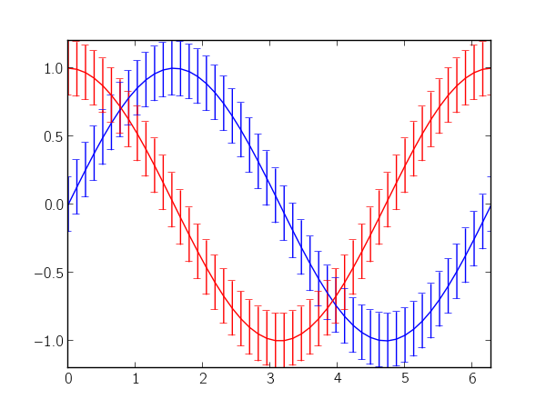

Plotting error bars
tags: matplotlib, line plots
Let's say you have some continuous data with a continuous error (or variance) measurement. Typically, you would just call matplotlib's errorbar function:
import numpy as np
import matplotlib.pyplot as plt
x = np.linspace(0, 2 * np.pi)
y_sin = np.sin(x)
y_cos = np.cos(x)
plt.errorbar(x, y_sin, 0.2)
plt.errorbar(x, y_cos, 0.2)
plt.show()
which produces the following plot:
The numerous error bars make the plot really noisy, and, in my opinion, they're really distracting. Instead, you could use matplotlib's fillbetween to denote the error as a region in the plot. In the following, I try to imitate errorbar's interface (minus many additional key-word arguments):
def errorfill(x, y, yerr, color=None, alpha_fill=0.3, ax=None):
ax = ax if ax is not None else plt.gca()
if color is None:
color = ax._get_lines.color_cycle.next()
if np.isscalar(yerr) or len(yerr) == len(y):
ymin = y - yerr
ymax = y + yerr
elif len(yerr) == 2:
ymin, ymax = yerr
ax.plot(x, y, color=color)
ax.fill_between(x, ymax, ymin, color=color, alpha=alpha_fill)
Continuing with the data and imports from the first code block, you can use the errorfill function as follows:
errorfill(x, y_sin, 0.2)
errorfill(x, y_cos, 0.2)
plt.show()
which gives:

With the fill method, you lose information about the direction of the error (especially if you have errors in both x and y), but for most use cases, this works pretty well.